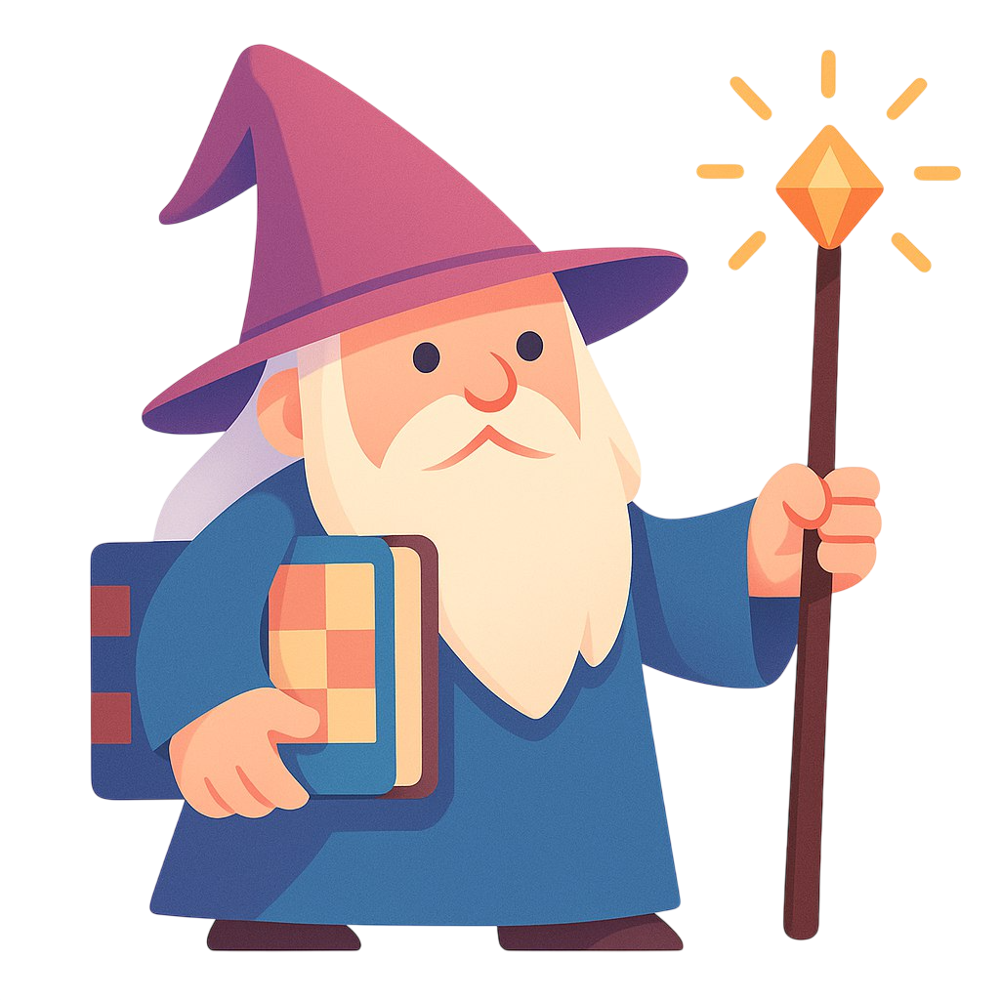
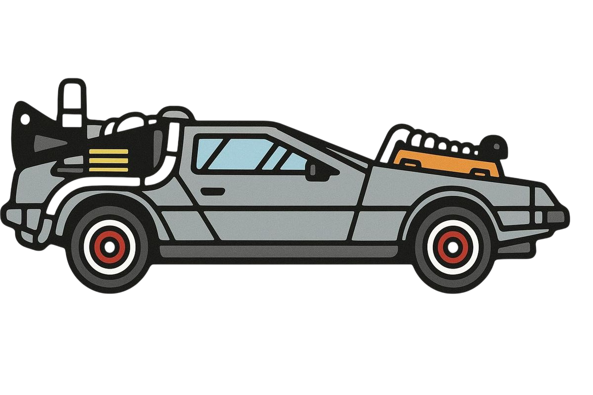

Шахматные квесты
Выбрать квест
Начать заново

Добро пожаловать, мой друг!
В этом интерактиве представлены разборы легендарных шахматных партий в формате квеста. В ключевые моменты партии тебе будут заданы вопросы на позиционное понимание и на тактику. В конце каждой партии мы посчитаем итоговое количество очков. В путь!
Начать квест
Оглавление партий
Итальянский романтизм (1620-1850)
›
1
Джоакино Греко – NN
Лондон, 1623 · Быстрый мат в дебюте
2
Джоакино Греко – NN
ок. 1620 · Атака на короля в центре
3
Джоакино Греко – NN
ок. 1620 · Жертва слона на h7
4
NN – Джоакино Греко
ок. 1620 · Атака ферзём и конём
5
Александер Макдоннелл – Л. де Ла Бурдонне
Лондон, 1834 · Классический сицилианский штурм
6
Адольф Андерссен – Лионель Кизерицкий
Лондон, 1851 · Бессмертная партия
7
Адольф Андерссен – Жан Дюфресн
Берлин, 1852 · Жертва качества и атака в Эвансе
Пол Чарльз Морфи (1850-1860-е)
›
8
Пол Морфи – Консультанты
Оперная партия, 1858 · Классическая атака
9
Луи Паульсен – Пол Морфи
Нью-Йорк, 1857 · Жертва ферзя в атаке
10
Сент-Аман / де Бастеро – Пол Морфи
Париж, 1858 · Консультативная партия
11
Джон В. Шультен – Пол Морфи
Нью-Йорк, 1857 · Гамбит короля с атакой Морфи
Стейниц и претенденты (1860-1890-е)
›
12
Исидор Гунсберг – Михаил Чигорин
Гавана, 1890 · Динамическая защита в испанской партии
13
Чигорин – Поллок
Нью-Йорк, 1889 · Прорыв, жертва и атака
14
М. Чигорин – В. Стейниц
Гавана, 1892 · Матч на первенство мира
15
В. Стейниц - А. Зельман
Балтимор, 1885 · Позиционная игра
Ласкер и современники (1890-1920-е)
›
16
Эм. Ласкер – И. Бауэр
пример · Тема атаки на короля
Капабланка. Простота и Гармония
›
17
Х.Р. Капабланка – Ф.Д. Маршалл
Испанская партия, интересный план
Алехин. Глубина и динамика
›
18
Алехин-Капабланка
Комбинация, динамические шахматы
Эйве. Метод и логика
›
20
Эйве-Алехин
Методичность, рациональные шахматы
Ботвинник. Асфальтоукладочный каток
›
21
Ботвинник - Капабланка
Сеанс одновременной игры
Режим выживания
♥
♥
♥
←
Назад
Вперёд
→
⇄
Я буду комментировать выбранные ходы!
Очки: 0
Дальше
XVII век · Романтизм
XXI век · Современные шахматы
